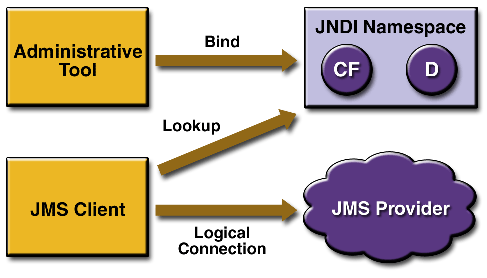
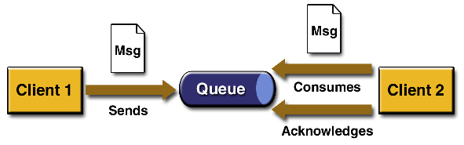
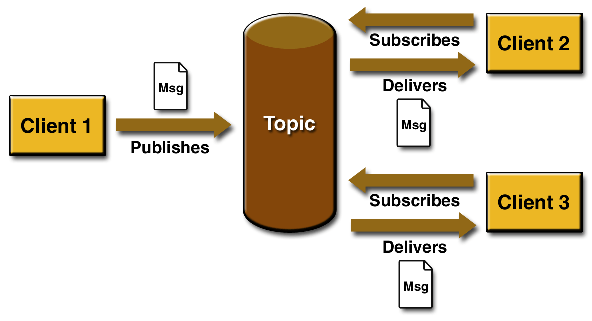

| JavaTM Message Service Tutorial |
| Tutorial Homepage | TOC | Prev | Next | Index |
2 Basic JMS API Concepts
This chapter introduces the most basic JMS API concepts, the ones you must know to get started writing simple JMS client applications:
The next chapter introduces the JMS API programming model. Later chapters cover more advanced concepts, including the ones you need to write J2EETM applications that use message-driven beans.
2.1 JMS API Architecture
A JMS application is composed of the following parts.
- A JMS provider is a messaging system that implements the JMS interfaces and provides administrative and control features. An implementation of the J2EE platform at release 1.3 includes a JMS provider.
- JMS clients are the programs or components, written in the JavaTM programming language, that produce and consume messages.
- Messages are the objects that communicate information between JMS clients.
- Administered objects are preconfigured JMS objects created by an administrator for the use of clients. The two kinds of administered objects are destinations and connection factories, which are described in Section 3.1, "Administered Objects."
- Native clients are programs that use a messaging product's native client API instead of the JMS API. An application first created before the JMS API became available and subsequently modified is likely to include both JMS and native clients.
Figure 2.1 illustrates the way these parts interact. Administrative tools allow you to bind destinations and connection factories into a Java Naming and Directory InterfaceTM (JNDI) API namespace. A JMS client can then look up the administered objects in the namespace and then establish a logical connection to the same objects through the JMS provider.

Figure 2.1 JMS API Architecture
2.2 Messaging Domains
Before the JMS API existed, most messaging products supported either the point-to-point or the publish/subscribe approach to messaging. The JMS Specification provides a separate domain for each approach and defines compliance for each domain. A standalone JMS provider may implement one or both domains. A J2EE provider must implement both domains.
In fact, most current implementations of the JMS API provide support for both the point-to-point and the publish/subscribe domains, and some JMS clients combine the use of both domains in a single application. In this way, the JMS API has extended the power and flexibility of messaging products.
2.2.1 Point-to-Point Messaging Domain
A point-to-point (PTP) product or application is built around the concept of message queues, senders, and receivers. Each message is addressed to a specific queue, and receiving clients extract messages from the queue(s) established to hold their messages. Queues retain all messages sent to them until the messages are consumed or until the messages expire.
PTP messaging has the following characteristics and is illustrated in Figure 2.2.

Figure 2.2 Point-to-Point Messaging
- Each message has only one consumer.
- A sender and a receiver of a message have no timing dependencies. The receiver can fetch the message whether or not it was running when the client sent the message.
- The receiver acknowledges the successful processing of a message.
Use PTP messaging when every message you send must be processed successfully by one consumer.
2.2.2 Publish/Subscribe Messaging Domain
In a publish/subscribe (pub/sub) product or application, clients address messages to a topic. Publishers and subscribers are generally anonymous and may dynamically publish or subscribe to the content hierarchy. The system takes care of distributing the messages arriving from a topic's multiple publishers to its multiple subscribers. Topics retain messages only as long as it takes to distribute them to current subscribers.
Pub/sub messaging has the following characteristics.
- Each message may have multiple consumers.
- Publishers and subscribers have a timing dependency. A client that subscribes to a topic can consume only messages published after the client has created a subscription, and the subscriber must continue to be active in order for it to consume messages.
The JMS API relaxes this timing dependency to some extent by allowing clients to create durable subscriptions. Durable subscriptions can receive messages sent while the subscribers are not active. Durable subscriptions provide the flexibility and reliability of queues but still allow clients to send messages to many recipients. For more information about durable subscriptions, see Section 5.2.1, "Creating Durable Subscriptions."
Use pub/sub messaging when each message can be processed by zero, one, or many consumers. Figure 2.3 illustrates pub/sub messaging.

Figure 2.3 Publish/Subscribe Messaging
2.3 Message Consumption
Messaging products are inherently asynchronous in that no fundamental timing dependency exists between the production and the consumption of a message. However, the JMS Specification uses this term in a more precise sense. Messages can be consumed in either of two ways:
- Synchronously. A subscriber or a receiver explicitly fetches the message from the destination by calling the
receivemethod. Thereceivemethod can block until a message arrives or can time out if a message does not arrive within a specified time limit.- Asynchronously. A client can register a message listener with a consumer. A message listener is similar to an event listener. Whenever a message arrives at the destination, the JMS provider delivers the message by calling the listener's
onMessagemethod, which acts on the contents of the message.
This Tutorial contains information on the 1.3.1 version of the Java 2 Platform, Enterprise Edition.
Copyright © 2002 Sun Microsystems, Inc. All rights reserved.